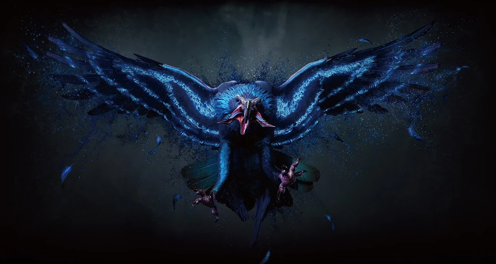
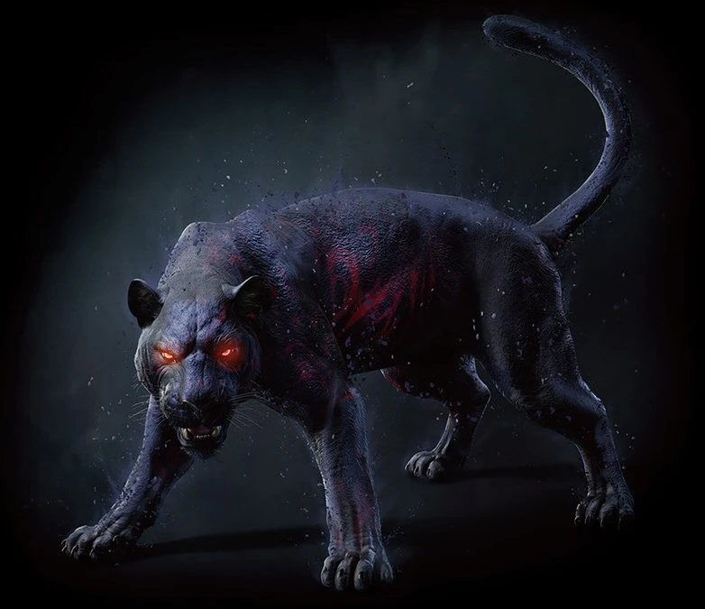
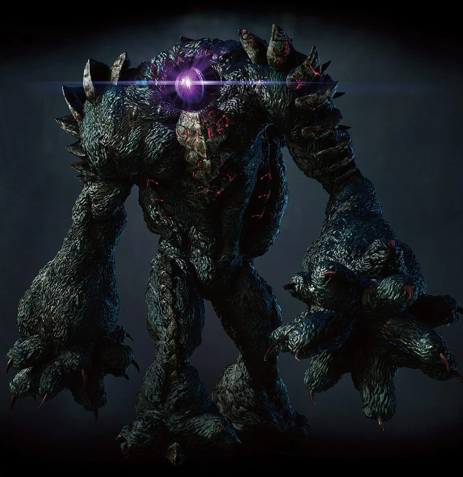
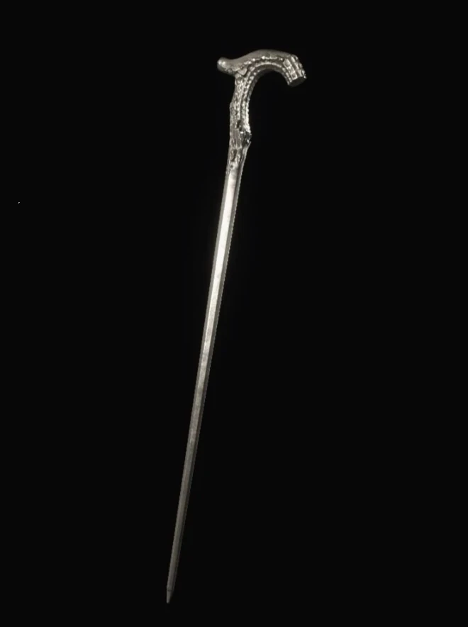

Биография
V — человек, связанный с Демоническим миром. Он выступает в качестве клиента агентства Данте, обратившегося к нему с просьбой разобраться с Уризеном.
Фамильяры V
| Снаряжение | Описание | Изображение |
|---|---|---|
| Гриффон | Эта чудовищная птица постоянно находится неподалеку от V и, как правило острит не закрывая клюв. Она способна создавать разряды молний. Грифон также может в случае необходимости переносить V по воздуху. Это единственный из фамильяров, способный говорить. |  |
| Тень | Этот демонический фамильяр предпочитает форму четвероногого зверя, но способен превращаться в клинки, иглы и прочие смертоносные орудия, находясь в гуще сражения. Однако может использовать в бою когти, зубы и хвост. Тень также может переносить V по земле. |  |
| Кошмар | V способен продемонстрировать всю свою силу, призвав этого огромного демона. Призванный Кошмар может обрушиться на поле боя с силой метеора и снести любую преграду, стоящую у него на пути. В его неторопливых движениях читается непревзойденная мощь и почти полная неуязвимость. Где бы ни появился Кошмар, его тяжеленные кулаки и лазерные лучи будут последним, что увидит враг. Обычный размер Кошмара 3,5 метра, однако он может становиться больше. V может напрямую управлять Кошмаром, взобравшись ему на спину и вонзив в него трость. |  |
| Трость | Трость — единственное оружие V, которое он использует, чтобы добивать врагов с критическим уровнем здоровья. Сам V практически не участвует в бою, полагаясь на своих фамильяров. Однако Грифон и Тень не могут убивать противников, и последний удар наносит V. Если не добить врага, через некоторое время он восстановит немного здоровья. |  |
Таблицу с способностями можно найти тут